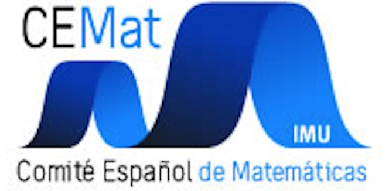
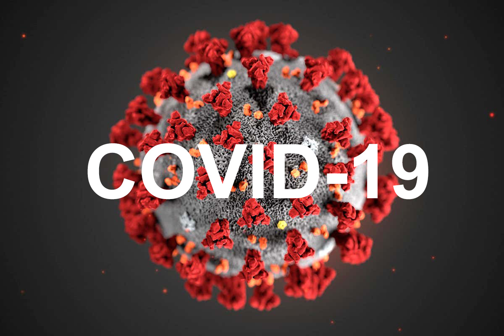
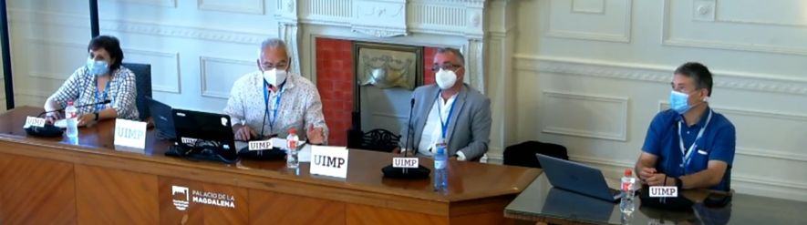

Noticias
Ricardo Cao Abad, María Jesús Carro Rosell,
Alfonso Gordaliza Ramos, Dolors Herbera i Espinal
Comité Español de Matemáticas (CEMat)
_____________________________________
 
Durante los días 27 y 28 de agosto tuvo lugar el curso Matemáticas vs. COVID-19, organizado por el CEMat como parte de la iniciativa Acción Matemática contra el Coronavirus, en la Universidad Internacional Menéndez y Pelayo (UIMP). El director del curso fue Alfonso Gordaliza (presidente del CEMat) y el secretario Ricardo Cao (presidente del comité de expertos de la Acción Matemática contra el Coronavirus).
El programa del curso consistió en ocho conferencias y una mesa redonda en las que se presentaron algunas de las muchas herramientas matemáticas y estadísticas que han mostrado su utilidad en la comprensión y en la lucha contra la pandemia.
Los conferenciantes David Alonso (Centro de Estudios Avanzados de Blanes, CSIC), Miguel Ángel Herrero (Universidad Complutense de Madrid), Nuria Oliver (Comisionada de la Presidencia de la Generalitat Valenciana en Inteligencia Artificial y Ciencias de Datos contra la COVID-19), Helena Ramalhinho (Universitat Pompeu Fabra) y José Antonio Vilar (Universidad da Coruña) impartieron conferencias de una hora. Además, se impartieron tres conferencias de veinte minutos, que fueron el punto de partida de una interesantísima mesa redonda en la que el tema central fue la importancia de tener datos de calidad así como las dificultades que nos hemos encontrado los investigadores para poder acceder a ellos. La mesa estuvo coordinada por Alfonso Gordaliza y los conferenciantes fueron Rosa María Cano (Jefa de Área Análisis Datos Vigilancia Epidemiológica Centro Nacional Epidemiología, Instituto de Salud Carlos III), Juan Rodríguez Poo (Presidente del Instituto Nacional de Estadística) y Ricardo Cao (Universidade da Coruña).
La asistencia de los conferenciantes fue mayoritariamente presencial en la sede del Palacio de la Magdalena y el curso fue realizado online por los estudiantes.
El programa iba dirigido a un público diverso formado por 69 estudiantes e investigadores matriculados, cifra que es muy notable en el marco de las actividades de la UIMP. Además de los estudiantes matriculados, numerosos investigadores, profesores y, en general, personas interesadas en el tema siguieron el curso que de manera abierta y gratuita ofreció la UIMP en streaming en el canal http://www.uimptv.es/. La estadística facilitada por la UIMP arroja las cifras horarias agregadas de 3.146 conexiones el jueves día 27 y 1.788 el viernes día 28. Hay que tener en cuenta que las actividades del jueves se extendían a la mañana y la tarde, mientras las del viernes eran solo por la mañana. La media diaria de conexiones de los otros cursos celebrados esa semana fue de 1.516, por lo que podemos felicitarnos por el éxito en cuanto al seguimiento. Los vídeos de las conferencias se encuentran disponibles hasta finales de año en este enlace.

Un detalle de gran interés para el colectivo de docentes, investigadores y estudiantes de Matemáticas y Estadística es la información que ofreció la Jefa de Área Análisis Datos Vigilancia Epidemiológica Centro Nacional Epidemiología en la mesa redonda celebrada en torno a la temática de los datos, relativa a la intención del Instituto de Salud Carlos III de reforzar las plantillas potenciando los perfiles de estadísticos, matemáticos y científicos de datos. Asimismo, el presidente del Instituto Nacional de Estadística hizo referencia a los cambios en el sistema de oposición para el acceso a dicha institución y que refuerzan el perfil de científico de datos.
Fuera del programa, a lo largo de los dos días de duración del curso, los organizadores del mismo tuvieron ocasión de departir y explorar posibles colaboraciones futuras, en el marco de la Acción Matemática contra el Coronavirus con algunos de los ponentes, así como organizadores y ponentes de otros cursos que se celebraron en paralelo en la sede de la Universidad Internacional Menéndez Pelayo. Entre ellos citamos a Raquel Yotti (directora general del Instituto de Salud Carlos III), Juan Rodríguez Poo (presidente del Instituto Nacional de Estadística), Marina Pollán (directora del Centro Nacional de Epidemiología), Xurxo Hervada (subdirector general de Información sobre Salud y Epidemiología de la Xunta de Galicia), Pilar Domingo-Calap (investigadora del Instituto de Biología Integrativa de Sistemas de la Universidad de Valencia), Rosa Cano (jefa de área Análisis Datos Vigilancia Epidemiológica del Centro Nacional de Epidemiología) y Amparo Larrauri (responsable del grupo de vigilancia de la gripe y otros virus respiratorios del Centro Nacional de Epidemiología).
José Rafael Rodríguez Galván
Universidad de Cádiz
_______________
Cuatro matemáticos, Yves Meyer, Ingrid Daubechies, Terence Tao y Emmanuel Candès, reciben el Premio Princesa de Asturias de Investigación Científica y Técnica 2020.
Como recoge la página web de la Fundación Princesa de Asturias 2, los premiados «han realizado contribuciones pioneras y trascendentales a las teorías y técnicas modernas del procesamiento matemático de datos y señales. Estas son base y soporte de la era digital —al permitir comprimir archivos gráficos sin apenas pérdida de resolución—, de la imagen y el diagnóstico médicos —al permitir reconstruir imágenes precisas a partir de un reducido número de datos— y de la ingeniería y la investigación científica —al eliminar interferencias y ruido de fondo—».
El premio puede entenderse como un espaldarazo a la comunidad matemática en general, pues el acta 3 hace énfasis en que este premio «subraya la contribución social de las matemáticas y su trascendencia como elemento transversal de todas las ramas de la ciencia».
Ingrid Daubechies nació en Bélgica en 1954, se doctoró en física teórica y se trasladó a EEUU en 1987, donde se convirtió en profesora de matemática computacional. Ha trabajado en el campo de las ondículas (wavelets) para el análisis de señales. Propuso la ondícula ortogonal con soporte compacto (llamada ondícula Daubechies) y la biondícula ortogonal, en la que se basa el formato de compresión de imágenes JPEG 2000.
Yves Meyer nació en Francia en 1939 y se doctoró en la Universidad de Estrasburgo en 1966. Ha trabajado en distintos centros y en la actualidad es profesor emérito en la Escuela Normal Superior de París-Saclay. Meyer es uno de los progenitores de la teoría de ondículas, propuso la ondícula que lleva su nombre y fue galardonado con el premio Abel en 2017.
Emmanuel Candès nació en Francia en 1970 y obtuvo su doctorado en Estadística en la Universidad de Stanford en 1998, donde actualmente es catedrático Barnum-Simon de Matemáticas y Estadística, profesor de Ingeniería Eléctrica y codirector de su Data Science Institute. Sus trabajos sobre ondículas generalizadas y compresión de señales han tenido gran impacto.
Terence Tao, nacido en Australia en 1975, exhibió desde muy joven habilidades extraordinarias para las matemáticas. Se doctoró en 1996 en la Universidad de Princeton y se incorporó en 1999 a la Universidad de California, Los Ángeles. Además del análisis de señales, ha trabajado en numerosas áreas de las matemáticas, entre las cuales podemos señalar sus resultados sobre números primos y sobre existencia y regularidad de solución para las ecuaciones de Navier-Stokes. En 2006 obtuvo la medalla Fields por «sus contribuciones a las ecuaciones en derivadas parciales, combinatoria, anáisis armónico y teoría aditiva de números».
Consejo Ejecutivo de la SEMA
_______
Dado el elevado número de solicitudes en las últimas ediciones, la calidad de los/las solicitantes y la diversidad de temáticas, el Comité Ejecutivo de la SEMA acordó, en su reunión de enero de 2020, que el número de distinciones concedidas anualmente pudiese ampliarse a dos en el caso en que las temáticas de los finalistas del proceso de selección fuesen suficientemente diferentes. Así ha sido en esta ocasión, por lo que, por primera vez desde la institución de este premio, la Sociedad tiene la oportunidad de reconocer dos trayectorias investigadoras sobresalientes en una misma convocatoria.
Debido a la situación excepcional provocada por el Covid-19, la entrega de Premios tendrá lugar el próximo año 2021 en las nuevas fechas de celebración del CEDYA/CMA 2020.
Jezabel Curbelo es graduada en Matemáticas por la Universidad de La Laguna (2009) y máster en Matemáticas y sus Aplicaciones por la Universidad Autónoma de Madrid (UAM) (2010). En esta misma Universidad se doctoró en Matemáticas en el año 2014 con la tesis titulada Instabilities in geophysical fluid dynamics: the influence of symmetry and the temperature dependent viscosity in convection, dirigida por Ana Mancho en el ICMAT. Ha sido profesora ayudante en el Departamento de Matemáticas de la UAM (2012-2014), investigadora postdoctoral en el «LabEX LIO Laboratoire de Géologie de Lyon» (2014-2016) e investigadora posdoctoral del programa Juan de la Cierva Formación en la Universidad Politécnica de Madrid (2016), puesto al que renunció por una plaza de profesor ayudante doctor en el Departamento de Matemáticas de la UAM (2016-2020). Entre los años 2016 y 2020 ha realizado distintas estancias como profesora visitante en el Department of Atmospheric and Oceanic Sciences de la University of California, Los Angeles, donde es actualmente Visiting Assistant Researcher, y en el Département des Sciences de la Terre de la École Normale Supérieure de Lyon. En julio de 2020 se incorporó como contratada Ramón y Cajal a la Universidad Politécnica de Cataluña, habiendo sido la mujer más joven seleccionada entre todos los paneles en la convocatoria de contratos Ramón y Cajal del año 2018.
Jezabel es coautora de más de una veintena de artículos publicados en prestigiosas revistas y ha participado en numerosos congresos nacionales e internacionales. Entre estos, destaca su charla invitada en la Nonlinear Geophysics Session of the 2015 American Geophysical Union Fall Meeting (congreso con más de 22.000 participantes), su seminario en el Invited Earth Science Seminar at Jet Propulsion Laboratory, NASA y la charla plenaria en el IV Congreso de jóvenes investigadores de la RSME 2017. En el año 2015 fue galardonada con el Donald L. Turcotte Award de la American Geophysical Union (AGU), que se otorga anualmente a jóvenes investigadores en reconocimiento a las contribuciones de su tesis doctoral en el campo de la geofísica no lineal. Ese mismo año le fue concedido uno de los premios Vicent Caselles de la RSME. En la actualidad es IP de un proyecto de investigación competitivo orientado a la petición de una ERC Starting Grant.
Jezabel Curbelo es un modelo de investigadora en matemática aplicada que combina técnicas de matemáticas fundamentales y computacionales y de geofísica para realizar avances significativos en problemas físicos fundamentales. Su campo de investigación son los problemas de convección complejos, donde la complejidad surge de la no linealidad, la geometría, las condiciones de contorno y las propiedades reológicas. La convección es un fenómeno de gran importancia en fluidos geofísicos que ha recibido mucha atención desde las matemáticas puras, aplicadas y computacionales y sobre el que existen aún multitud de problemas abiertos. En este contexto Jezabel ha realizado avances muy significativos en el estudio de la convección en presencia de una viscosidad dependiente de la temperatura, una dependencia esencial para comprender, por ejemplo, la convección en el interior de la tierra. Este escenario requiere técnicas novedosas tanto en la descripción matemática como en los métodos computacionales, habiendo publicado contribuciones muy relevantes en ambas direcciones. Por ejemplo, ha realizado los análisis de bifurcación más detallados y rigurosos existentes hasta la fecha en problemas de convección con viscosidad dependiente de la temperatura y ha desarrollado métodos numéricos espectrales innovadores para resolver este tipo de problemas. Otro problema en el que ha obtenido avances reveladores es en la identificación de estructuras en flujos geofísicos mediante la técnica del método de los «descriptores Lagrangianos» desarrollada por ella y sus colaboradores.
Rafael Granero es licenciado en Matemáticas por la Universidad Autónoma de Madrid (UAM) (2008), máster en Matemáticas y sus Aplicaciones por esta misma universidad (2009) y máster en Ecuaciones en Derivadas Parciales y Modelización Aleatoria y Determinista por la Université Paris-Dauphine (2009). Obtuvo su título de doctor en Matemáticas en el año 2013 por la UAM con la tesis titulada The inhomogeneous Muskat problem, realizada en el ICMAT bajo la supervisión de Diego Córdoba y Rafael Orive-Illera. Desde entonces, ha realizado estancias de investigación en universidades como Oxford (2014) o Lyon (2019), y ha trabajado como investigador posdoctoral contratado en el Laboratoire d’excellence en Mathématiques et Informatique fondamentale MILyon (2016-17), también en Lyon. Además, en el periodo 2013-2016, ocupó el puesto de Arthur J. Krener Assistant Professor en la Universidad de California, Davis. Desde el año 2017 es profesor ayudante doctor en la Universidad de Cantabria, y está acreditado como profesor Titular de Universidad.
A lo largo de su carrera, Rafael ha impartido numerosos seminarios en universidades y centros de prestigio como Princeton University, University of California at Berkeley, Rice University, King’s College London, Vanderbilt University, BCAM o la École Normale Supérieure de Lyon. Ha impartido también numerosas charlas en conferencias internacionales entre las que destacan las 10th and 12th AIMS Conferences on Dynamical Systems, Differential Equations and Applications, varias AMS Sectional Meetings y EQUADIFF 2015. Entre sus otros méritos, destaca haber recibido en el año 2015 uno de los premios Vicent Caselles que anualmente otorga la RSME. En el año 2018 fue galardonado por la Comisión Europea con una Marie Sklodowska-Curie Actions Seal of Excellence por una «propuesta de proyecto de alta calidad» presentado en el año 2017.
Rafael es autor de más de 35 artículos científicos, en revistas prestigiosas como Advances in Mathematics o SIAM Journal on Mathematical Analysis. Su campo de investigación son las ecuaciones en derivadas parciales, y más en concreto ha estudiado problemas relacionados con la dinámica de fluidos, modelos de olas, así como ecuaciones de agregación celular en biología matemática. Destacan sus importantes resultados para el problema de Muskat: un modelo clásico para la interfaz entre dos fluidos en un medio poroso. En el complejo «escenario confinado» de dicho problema ha obtenido resultados de existencia local y global, así como de formación de singularidades de tipo turning. También cabe destacar sus resultados de existencia global de soluciones débiles para varios modelos de ecuaciones de transporte con velocidad no local (como las ecuaciones de Euler o QGS). Recientemente ha obtenido resultados innovadores sobre la existencia global de soluciones para la llamada inestabilidad de Rayleigh-Taylor, que ocurre cuando un fluido más denso yace sobre uno más ligero bajo el efecto de la gravedad.
El Premio SEMA al Joven Investigador se concede desde el año 1998. La lista de anteriores galardonados se puede consultar aquí.
_____________________________________ ◇◇◇_____________________